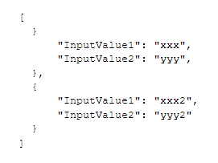

Test case sets from JSON
The test case set is a series of values that can be used as input values in a unit test or UI test workflow. The values contained in the data pool will be the input, output, or expected values of the test. For example, the UI tests typically will be typed using the type command. The test cases can be read from a JSON file. You must load the test cases in the JSON file, load in the KB, and read it from any test object. Suppose that your application has a WebPanel with two input fields and a confirm button: The first step is to write the input values in a JSON file:  The second step is to add the JSON file in Customization -> Files, in order for it to be used from a test and the Extract property of the respective environment must be set in True. During the building process, the JSON file will be copied to the environment folder (Extract property must be set to True). Then, you have to update the test to read the test values from the JSON. The JSON values will be saved in an SDT data collection and the test will iterate over it.
&driver.Start()
&driver.Maximize()
&File.Source = "TestDataFile.json"
&TestCases.FromJsonFile(&File)
for &TestCase in &TestCases
&driver.Go(WebPanel.Link())
&driver.Type("&Field1",&TestCase.InputValue1)
&driver.Type("&Field2",&TestCase.InputValue2)
&driver.ClickByID("Confirm")
endfor
// End driver
&driver.End()
To define the below variables, an SDT structure should be created and the variables should be defined: Note that you can use the test case sets for all test types. Another possible solution to manage test case sets values is to implement a data provider, in which you write the different test cases, and the test iterates over this (like in the automatic generated unit tests).
|


| Backlinks |
| Toc:GXtest v4 |